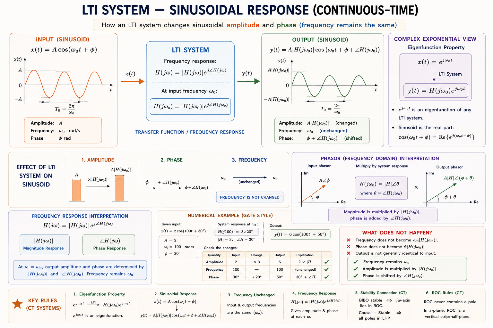
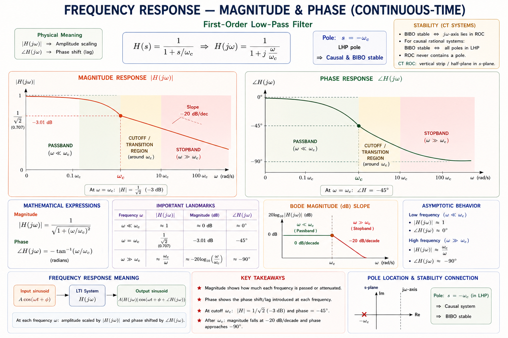
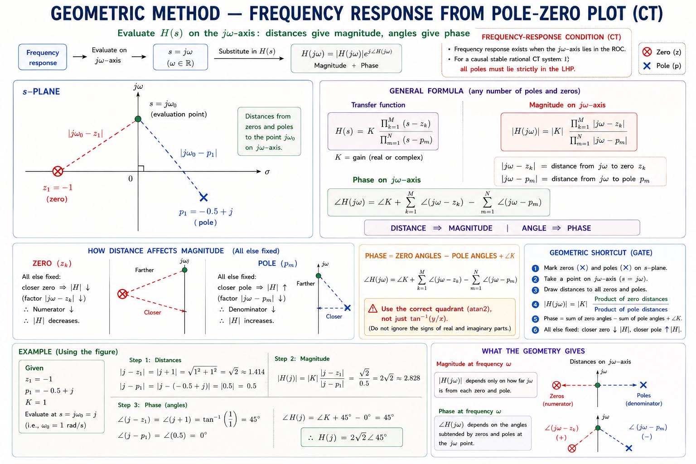
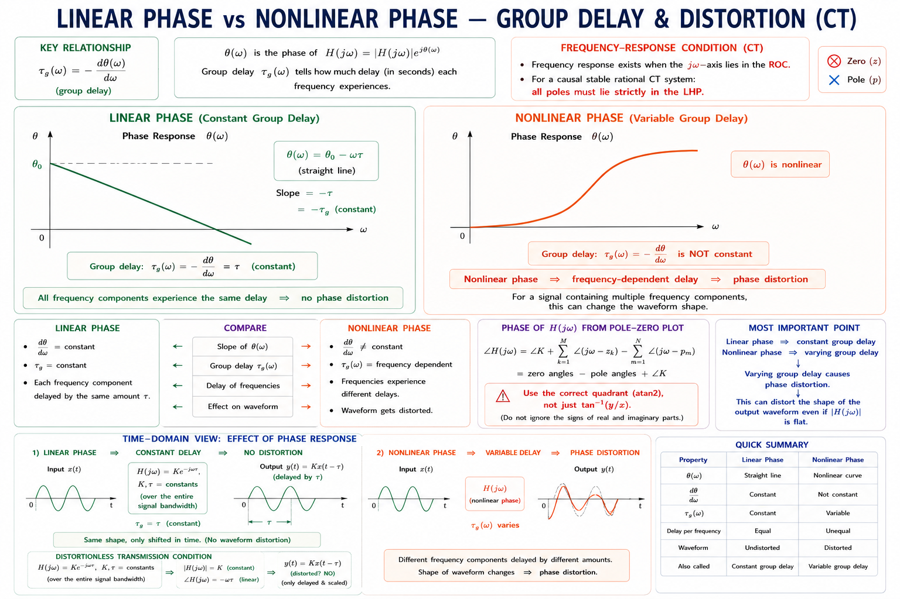
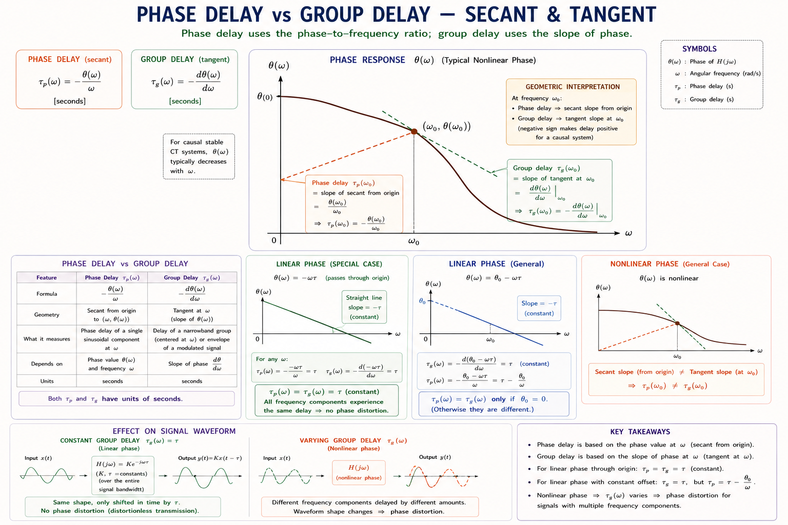
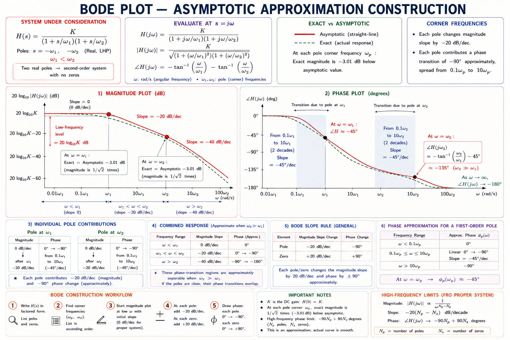

Frequency Response of LTI Systems
Transfer function, frequency response, magnitude and phase response, group delay, phase delay — comprehensive GATE/IES/PSU coverage with full derivations, pole-zero analysis, Bode-type insights, and solved examples from standard textbooks (Oppenheim & Willsky, Haykin & Van Veen, Lathi).
Introduction & Big Picture
Every filter, amplifier, communication channel, and control system processes signals. The fundamental question engineers ask is: how does the system respond to sinusoidal inputs at different frequencies? The answer is the frequency response — arguably the single most important characterisation of a Linear Time-Invariant (LTI) system.
Audio equalizers, ECG filters, radar receivers, motor drives, and 5G base stations — all are designed by shaping frequency response. Mastering this chapter means you can design, analyse, or predict the behaviour of virtually any linear system.[1]
Where Frequency Response Appears in Engineering
- ▸PWM inverter output filtering
- ▸Speed controller bandwidth
- ▸Active harmonic filters (5th, 7th harmonic rejection)
- ▸Channel equalizer design
- ▸Anti-aliasing filters before ADC
- ▸IF bandpass filter in receivers
- ▸Gain margin & phase margin
- ▸Bode plot for stability
- ▸Lead-lag compensator design
- ▸ECG baseline wander removal (high-pass)
- ▸EEG delta/alpha/beta band separation
- ▸Pacemaker signal conditioning
The Central Idea — Eigenfunctions of LTI Systems
The most profound insight in signals & systems is that complex exponentials are eigenfunctions of LTI systems.[1] If you feed \(e^{j\omega t}\) into any LTI system, the output is exactly the same frequency, scaled by a complex number \(H(j\omega)\):
The system neither creates new frequencies nor destroys old ones — it only scales and shifts each sinusoid. This is why frequency response is so powerful.

Transfer Function
The transfer function \(H(s)\) is the ratio of the Laplace transform of the output to the Laplace transform of the input, assuming zero initial conditions.[2] For a continuous-time LTI system described by the LCCDE:
Taking the Laplace transform with zero initial conditions and collecting terms:
Factored (Pole-Zero) Form
Every rational transfer function can be expressed in the factored form, which directly shows the zeros \(z_k\) (roots of numerator) and poles \(p_k\) (roots of denominator):
\(K = b_M/a_N\) is the system gain. Each zero makes \(|H|\to 0\); each pole makes \(|H|\to\infty\).
Poles determine the natural response (exponential modes) — their location sets stability and speed. Zeros determine how the input is shaped — they create transmission nulls. A stable causal system has all poles in the left half of the \(s\)-plane (Re\(\{p_k\} < 0\)).[1]
Transfer Function for Discrete-Time Systems
For discrete-time LTI systems described by difference equations, the Z-transform gives the transfer function \(H(z)\):
Frequency Response
The frequency response \(H(j\omega)\) is the transfer function evaluated on the imaginary axis \(s = j\omega\). It is the Fourier transform of the impulse response \(h(t)\):[1]
Since \(H(j\omega)\) is a complex function of the real variable \(\omega\), it can be written in polar form:
Think of a graphic equalizer on a music system. You can boost bass (low \(\omega\)) and cut treble (high \(\omega\)), or vice versa. The equalizer is an LTI system. The slider positions define \(|H(j\omega)|\) at each frequency — that is literally the magnitude response. When you adjust the sliders, you are sculpting the frequency response of the system.
Frequency Response from Convolution
For an input \(x(t) = e^{j\omega_0 t}\) applied to a BIBO-stable LTI system, the output is:
This confirms the eigenfunction property. For a real sinusoidal input \(x(t) = A\cos(\omega_0 t + \phi)\), by linearity and Euler's formula:

For Discrete-Time Systems — DTFT Frequency Response
For a discrete-time LTI system, the frequency response is obtained by evaluating \(H(z)\) on the unit circle \(z = e^{j\hat\omega}\) (where \(\hat\omega\) is the normalised digital frequency, \(-\pi \le \hat\omega < \pi\)):[3]
Magnitude Response
The magnitude response \(|H(j\omega)|\) tells us by what factor the amplitude of each sinusoidal component is scaled by the system. It is computed as the modulus of \(H(j\omega)\):[1]
In decibels (used in Bode plots): \(\;|H(j\omega)|_{\text{dB}} = 20\log_{10}|H(j\omega)|\)
Computing Magnitude from Pole-Zero Plot
A powerful geometric method uses the pole-zero plot. For a point \(s = j\omega\) on the imaginary axis, draw vectors from each zero and each pole to the point. Then:[1]
Each factor \(|j\omega - z_k|\) = length of vector from zero \(z_k\) to \(j\omega\). Similarly for poles.

Ideal Filter Magnitude Responses
| Filter Type | Passband | Stopband | Cutoff Freq | GATE Importance |
|---|---|---|---|---|
| Lowpass (LPF) | \(|\omega| \le \omega_c\) | \(|\omega| > \omega_c\) | \(\omega_c\) | 🟢 Very High |
| Highpass (HPF) | \(|\omega| \ge \omega_c\) | \(|\omega| < \omega_c\) | \(\omega_c\) | 🟢 High |
| Bandpass (BPF) | \(\omega_l \le |\omega| \le \omega_h\) | Otherwise | \(\omega_l, \omega_h\) | 🟡 Medium |
| Bandstop (BSF) | \(|\omega| < \omega_l\) or \(|\omega| > \omega_h\) | \(\omega_l \le |\omega| \le \omega_h\) | \(\omega_l, \omega_h\) | 🟡 Medium |
| Allpass (APF) | All \(\omega\) | None | — | 🟡 Medium |
Ideal brick-wall filters have infinite order (non-causal impulse response = sinc function). In practice, Butterworth, Chebyshev, Elliptic, and Bessel designs approximate the ideal with finite-order rational transfer functions. GATE tests Butterworth order and cutoff most frequently.
Phase Response
The phase response \(\theta(\omega) = \angle H(j\omega)\) describes how much a sinusoid at frequency \(\omega\) is phase-shifted by the system. It tells us about the timing of the output relative to the input:
Phase from the Pole-Zero Plot
Geometrically, the phase is the sum of the angles of the zero-vectors minus the sum of the angles of the pole-vectors:[1]
Linear Phase — The Gold Standard
A system has linear phase if \(\theta(\omega) = -\alpha\omega\) for some constant \(\alpha\). This is the ideal because all frequency components experience the same time delay \(\alpha\) — the output waveform is a perfect undistorted replica of the input, just shifted in time. No phase distortion occurs.[3]
The output is a delayed version of the input by \(\alpha\) seconds. No waveform distortion — only a time shift.
In digital audio, if a filter has non-linear phase, bass notes are delayed differently from treble — the music sounds "smeared." FIR filters with symmetric coefficients have exact linear phase, which is why they dominate audio and communications processing. The IIR Bessel filter is the closest analogue design to linear phase.

Group Delay & Phase Delay
Two delay measures capture different aspects of how an LTI system shifts signals in time. Understanding both is critical for GATE problems on filter design and communication channel characterisation.
Phase Delay
The phase delay \(\tau_p(\omega)\) is the time by which a carrier sinusoid at frequency \(\omega\) appears to be delayed at the output:[2]
For a sinusoid \(A\cos(\omega t)\), the output is \(A|H|\cos(\omega(t - \tau_p))\). Phase delay is the apparent time shift of the carrier.
Group Delay
The group delay \(\tau_g(\omega)\) is the time delay of the envelope of a narrowband signal centred at frequency \(\omega\). It is the negative derivative of the phase response:[1][2]
An AM radio signal has a carrier at \(\omega_c\) and a voice envelope varying slowly near DC. The carrier travels through the channel at phase velocity (related to \(\tau_p\)) while the voice information (the envelope) travels at group velocity (related to \(\tau_g\)). Group delay is what truly matters for intelligibility of the voice signal — constant group delay means the voice arrives undistorted.

| Property | Phase Delay \(\tau_p(\omega)\) | Group Delay \(\tau_g(\omega)\) |
|---|---|---|
| Definition | \(-\theta(\omega)/\omega\) | \(-d\theta/d\omega\) |
| Physical meaning | Time shift of sinusoidal carrier | Time shift of signal envelope |
| Relevant for | Phase coherence, carrier timing | Waveform fidelity, distortion |
| Linear phase system | Constant (= α) | Constant (= α) |
| Non-linear phase | Varies with ω | Varies with ω |
| GATE focus | 🟡 Medium | 🟢 High |
For a linear phase system \(\theta(\omega) = -\alpha\omega\), both delays are identical and constant: \(\tau_p = \tau_g = \alpha\). The constant group delay is the condition for distortionless transmission of wideband signals.[1]
Pole-Zero Effect on Frequency Response
The location of poles and zeros in the \(s\)-plane (or \(z\)-plane for DT) completely determines the shape of both magnitude and phase responses. This is one of the most tested topics in GATE.
Effect of a Single Pole at \(s = -a\) (Real)
Consider \(H(s) = \frac{1}{s+a}\), \(a > 0\). On the \(j\omega\)-axis: \(H(j\omega) = \frac{1}{a+j\omega}\).

Effect of a Complex Conjugate Pole Pair
A second-order system with complex conjugate poles \(s = -\sigma \pm j\omega_d\) gives a resonant peak in the magnitude response near the natural frequency \(\omega_n = \sqrt{\sigma^2 + \omega_d^2}\):[2]
When \(\zeta < 0.707\), the magnitude response has a resonance peak above unity at \(\omega_r = \omega_n\sqrt{1-2\zeta^2}\). The peak value is \(1/(2\zeta\sqrt{1-\zeta^2})\). For \(\zeta \ge 0.707\), no peak exists — monotonically decreasing response. This is heavily tested in GATE Control Systems and Signals combined questions.
Effect of Zeros on Magnitude
| Zero Location | Effect on Magnitude | Effect on Phase |
|---|---|---|
| On \(j\omega\)-axis at \(j\omega_0\) | Transmission null: |H(jω₀)| = 0 | Phase jumps by +π at ω₀ |
| In left half-plane | Minimum-phase system; smoother roll-off | Minimum possible phase shift |
| In right half-plane | Non-minimum phase; same magnitude as mirror image | Excess phase lag added |
| At origin (differentiator) | |H| increases: +20 dB/dec | Phase: constant +90° |
Bode-Type Interpretation
A Bode plot displays \(20\log_{10}|H(j\omega)|\) (dB) and \(\angle H(j\omega)\) (degrees) versus \(\log_{10}(\omega)\). The logarithmic frequency axis allows straight-line asymptotic approximations — a powerful tool for quick hand-calculation.[2]
Asymptotic Slope Rules — Summary
| System Factor | Magnitude Slope | Phase Contribution | GATE Probability |
|---|---|---|---|
| Gain constant \(K\) | \(20\log K\) dB (flat) | 0° (or ±180° if \(K<0\)) | 🟢 Very High |
| Integrator \(1/s\) (pole at origin) | −20 dB/dec; −20 dB at \(\omega=1\) | Constant −90° | 🟢 High |
| Differentiator \(s\) (zero at origin) | +20 dB/dec; 0 dB at \(\omega=1\) | Constant +90° | 🟢 High |
| Real pole \(1/(1+s/a)\) | 0 before \(a\); −20 dB/dec after \(a\) | 0° → −90° (centered at \(a\)) | 🟢 Very High |
| Real zero \((1+s/a)\) | 0 before \(a\); +20 dB/dec after \(a\) | 0° → +90° (centered at \(a\)) | 🟢 High |
| Complex pole pair \(\omega_n, \zeta\) | −40 dB/dec above \(\omega_n\); peak if \(\zeta<0.707\) | 0° → −180° around \(\omega_n\) | 🟡 Medium |

Delay Plot — Asymptotic Group Delay
Group delay for a real pole at \(s=-a\) is \(\tau_g(\omega) = a/(a^2+\omega^2)\), which is a Lorentzian shape — maximum \(1/a\) at DC, falling as \(1/\omega^2\) at high frequencies. For GATE, remember: more poles near the passband edge → more group delay variation → more waveform distortion.
Common Student Mistakes
Many students memorise only \(\tau_g = -d\theta/d\omega\) and write \(\tau_p = -d\theta/d\omega\) as well. Phase delay is \(-\theta(\omega)/\omega\) (a ratio, not a derivative). They are equal only for linear-phase systems. Always identify which delay the question is asking for.
When asked for the frequency response, always substitute \(s = j\omega\) into \(H(s)\). Do not substitute \(j\) for \(s\) directly without \(\omega\). The correct step is: \(H(j\omega) = H(s)|_{s=j\omega}\).
Slopes are cumulative. If there are two poles at \(\omega_1\) and \(\omega_2\): the slope is 0 before \(\omega_1\), −20 dB/dec between \(\omega_1\) and \(\omega_2\), and −40 dB/dec after \(\omega_2\). A common error is to reset back to −20 instead of accumulating to −40.
An allpass filter has \(|H(j\omega)| = 1\) for all \(\omega\), but its phase response is non-trivial. It is used for phase equalisation. Students often confuse it with an ideal wire (no phase shift either). Key: allpass has poles and zeros reflected about the \(j\omega\)-axis — right-half-plane zeros paired with left-half-plane poles.
In discrete-time, the frequency variable is \(\hat\omega\) (rad/sample), periodic with period \(2\pi\). Do not write \(H(j\omega)\) for a discrete-time system — write \(H(e^{j\hat\omega})\) or \(H(z)|_{z=e^{j\hat\omega}}\). The digital frequency range is \(-\pi \le \hat\omega < \pi\), not \(-\infty\) to \(\infty\).
GATE Insights & Previous Year Questions
Transfer function from LCCDE — Given a differential equation, find H(s) or H(z) by taking Laplace/Z-transform. Almost guaranteed one question per year.
Magnitude and phase at a specific frequency — Substitute \(s=j\omega_0\) and compute modulus/argument. Watch for special values: \(\omega=0\), \(\omega\to\infty\), \(\omega=a\) (pole frequency).
Group delay calculation — Differentiate the phase expression. Often combined with allpass filter questions.
Bode plot identification — Given a Bode plot, identify the transfer function (count slopes, find corner frequencies). Or vice versa — given H(s), sketch asymptotic Bode.
A causal LTI system has transfer function \(H(s) = \dfrac{s-a}{s+a}\), \(a > 0\). The group delay of this system is:
- (A) \(\;0\)
- (B) \(\;\dfrac{2a}{a^2+\omega^2}\)
- (C) \(\;\dfrac{a}{a^2+\omega^2}\)
- (D) \(\;\dfrac{1}{a}\)
On \(j\omega\)-axis: \(H(j\omega) = \dfrac{j\omega - a}{j\omega + a}\). Note \(|H(j\omega)| = 1\) for all \(\omega\) (allpass).
Phase: \(\theta(\omega) = \angle(j\omega-a) - \angle(j\omega+a) = \left[\pi - \arctan\!\dfrac{\omega}{a}\right] - \arctan\!\dfrac{\omega}{a} = \pi - 2\arctan\!\dfrac{\omega}{a}\).
Answer: (B). Key insight: allpass filter has constant unit magnitude but non-constant group delay — used as a phase equaliser in practice.
A system has a pole at \(s = -2\) and a zero at \(s = 0\). The DC gain \(|H(j0)|\) of the system is:
- (A) \(\;0\)
- (B) \(\;1/2\)
- (C) \(\;2\)
- (D) \(\;\infty\)
\(H(s) = K\dfrac{s}{s+2}\). At \(\omega=0\): \(H(j0) = K\dfrac{0}{0+2} = 0\). A zero at the origin (\(s=0\)) creates a transmission null at DC. This is a highpass characteristic. Answer: (A).
Which of the following statements is correct for a distortionless LTI system?
- (A) Flat magnitude response, any phase
- (B) Any magnitude, linear phase
- (C) Flat magnitude AND linear phase
- (D) Minimum-phase response
Distortionless transmission requires \(y(t) = c\cdot x(t - t_0)\), i.e., flat magnitude (so all frequencies amplified equally) AND linear phase \(\theta(\omega) = -\omega t_0\) (so all frequencies delayed equally). Answer: (C).
Numerical Examples
Step 1 — Transfer Function: The voltage divider gives \(H(s) = \dfrac{1/sC}{R + 1/sC} = \dfrac{1}{1 + sRC}\).
With \(\tau = RC = 10^3 \times 10^{-6} = 10^{-3}\,\text{s} = 1\,\text{ms}\):
Step 2 — Frequency Response (set \(s = j\omega\)):
Step 3 — Magnitude and Phase:
Step 4 — Cutoff Frequency: At \(-3\,\text{dB}\), \(|H| = 1/\sqrt{2}\): \(\omega_c = 1/\tau = 1000\,\text{rad/s} = 1\,\text{krad/s}\). In Hz: \(f_c = 1000/2\pi \approx 159\,\text{Hz}\).
Step 5 — Group Delay:
At DC: \(\tau_g(0) = \tau = 1\,\text{ms}\). At \(\omega_c\): \(\tau_g(\omega_c) = 0.5\,\text{ms}\). Group delay decreases with frequency — this is non-constant group delay, causing some waveform distortion for broadband signals.
Step 1 — Magnitude Response:
The system is allpass: it passes all amplitudes equally.
Step 2 — Phase Response:
Step 3 — At \(\omega = 3\,\text{rad/s}\):
Phase delay: \(\tau_p(3) = -\theta(3)/3 = -(\pi/2)/3 = -\pi/6 \approx -0.524\,\text{s}\)
(Negative phase delay means the carrier is phase-advanced — this is because the zero is in the RHP.)
Step 4 — Group Delay:
Physical meaning: The system delays the signal envelope by \(1/3\,\text{s}\) at \(\omega = 3\,\text{rad/s}\). It does not change the amplitude of any frequency. It is used as a phase equaliser to correct non-linear phase in other systems.
(a) Filter Type: The zero at the origin (\(s=0\)) creates a null at DC (\(\omega=0\)). The complex poles at \(\pm j2\) create a resonant peak near \(\omega \approx \sqrt{1+4} = \sqrt{5} \approx 2.24\,\text{rad/s}\). Then the magnitude falls off for \(\omega \gg \omega_n\). This is a bandpass filter — zero at DC, peak near \(\omega_n\), roll-off at high frequencies.
(b) DC Gain: Zero at origin → \(|H(j0)| = 0\). The zero vector length is \(|j\cdot0 - 0| = 0\). Confirmed: DC gain = 0.
(c) High-Frequency Behaviour: One zero, two poles → net order = −1 (one more pole than zeros). Asymptotic slope: −20 dB/dec as \(\omega\to\infty\). Phase asymptote: \(+90° - 2\times90° = -90°\).
Memory Tricks & Mnemonics
- ▸Each pole adds −20 dB/dec to slope
- ▸Each zero adds +20 dB/dec to slope
- ▸Final slope = (Z − P) × 20 dB/dec
- ▸Slopes are cumulative — never reset
- ▸Group delay = −Gradient (slope) of phase
- ▸Phase delay = phase/frequency (ratio)
- ▸"G for Gradient, P for portion"
- ▸Flat group delay → linear phase → no distortion
- ▸Zero at \(+a\), pole at \(-a\) = allpass
- ▸RHP zero cancels magnitude change of LHP pole
- ▸|H| = 1 always, but phase changes
- ▸Used for phase equalisation
- ▸At every pole corner \(\omega_p\): magnitude is −3 dB
- ▸Phase is exactly −45° per real pole at \(\omega_p\)
- ▸Two poles at same point → −6 dB and −90° at that frequency
- ▸"Three D Bee at the Corner"
Imagine a signal travelling through a city (the LTI system). At each pole neighbourhood, traffic slows — the signal's high-frequency components are attenuated (−20 dB/dec per pole). At each zero checkpoint, a certain frequency is completely stopped (transmission null). The city has a shape (magnitude) and a time zone difference (phase). Group delay tells you how long your message (envelope) takes to cross the city — constant group delay means all parts of your message arrive together, undistorted.
Quick Revision Sheet
\(H(s)=Y(s)/X(s)\). Pole-zero form: \(K\prod(s-z_k)/\prod(s-p_k)\). Stable CT: poles in LHP.
\(H(j\omega) = H(s)|_{s=j\omega}\). DT: \(H(e^{j\hat\omega}) = H(z)|_{z=e^{j\hat\omega}}\). Sinusoidal SS output: \(A|H|cos(\omega t+\phi+\theta)\).
\(|H(j\omega)| = |K|\prod|j\omega-z_k|/\prod|j\omega-p_k|\). Zero on \(j\omega\) → null. Pole near \(j\omega\) → peak.
\(\theta(\omega) = \angle K + \sum\angle(j\omega-z_k) - \sum\angle(j\omega-p_k)\). Linear phase: \(\theta=-\alpha\omega\) → no distortion.
Phase: \(\tau_p=-\theta(\omega)/\omega\). Group: \(\tau_g=-d\theta/d\omega\). Equal iff linear phase. Constant \(\tau_g\) = distortionless.
Each pole: −20 dB/dec, −90° (cumulative). Each zero: +20 dB/dec, +90°. At corner: −3 dB, −45° (real pole). Slopes are cumulative.
\(H(s)=(s-a)/(s+a)\): \(|H|=1\) all \(\omega\). Group delay \(= 2a/(a^2+\omega^2)\). RHP zero + LHP pole. Used for phase equalisation.
Standard form: \(\omega_n^2/(s^2+2\zeta\omega_ns+\omega_n^2)\). Resonance at \(\omega_r=\omega_n\sqrt{1-2\zeta^2}\) if \(\zeta<0.707\). At \(\omega_n\): phase = −90°.
Requires: flat \(|H(j\omega)|\) AND linear \(\theta(\omega)=-\omega t_0\). Output = scaled delayed input: \(y(t)=c\cdot x(t-t_0)\).
Stuck on a concept? Ask a question about frequency response, Bode plots, or group delay.
- [1]
Oppenheim, A.V. & Willsky, A.S. — Signals and Systems, 2nd ed., Prentice Hall. Chapters 6–7 on Fourier analysis and frequency response of LTI systems. The standard reference for GATE preparation.
- [2]
Haykin, S. & Van Veen, B. — Signals and Systems, 2nd ed., Wiley. Chapter 7: Frequency Response and Filtering. Excellent for Bode plots and delay analysis.
- [3]
Lathi, B.P. & Ding, Z. — Modern Digital and Analog Communication Systems, 4th ed., Oxford. Part I: Signal Analysis. Strong coverage of discrete-time frequency response and digital filter design.
- [4]
Proakis, J.G. & Manolakis, D.G. — Digital Signal Processing: Principles, Algorithms, and Applications, 4th ed., Pearson. Chapters 4–5 on z-transform and frequency analysis of DT systems.
- [5]
GATE EE/EC Previous Year Question Papers (2010–2024) — Official IIT/IITB GATE papers. Frequency response questions appear every year; allpass and group delay are recurring favourites.